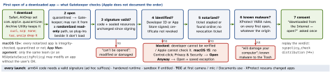
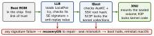

macos · folio
In one line: Each layer catches what the one before cannot: Secure Boot starts only an
Apple-signed macOS, as its LocalPolicy allows; SIP keeps the sealed
system volume (SSV) read-only even for root; a quarantined download meets
Gatekeeper (signature, Developer ID, notarization, XProtect) at first
open; then the hardened runtime blocks injection, the App Sandbox confines,
TCC asks per resource, FileVault encrypts. macOS 27 (Sep 2026): Apple silicon only.
Download PDF Print view LaTeX source


Secure Boot on Apple silicon

| Full | default, as on iOS: install fetches a personalised signature (ECID) from Apple’s signing server, so only the newest macOS at install time boots; the server refuses old security epochs |
| Reduced | trusts the global signature shipped with macOS (older versions); required for third-party kexts — merged into an AuxKC whose hash is in the LocalPolicy, loaded after a restart, never on demand |
| Permissive | chain still verified, but iBoot also accepts objects the Secure Enclave signed locally (a custom XNU kernel collection); required to turn SIP off; command line only |
LocalPolicy: an Image4 file per installed macOS, signed by the Owner Identity Key in the Secure Enclave (“Ownership”). Full ↔ Reduced in Startup Security Utility. 1TR (paired One True recoveryOS) = power button single press-and-hold; NVRAM, a double press or a boot error reach plain recoveryOS, which may set Reduced but not the SIP bits or a custom kernel. Malware cannot hold a button, so these Macs neither need nor support a firmware password. Fields: nsih SHA-384 of the macOS manifest (iBoot, trust cache, kernel collection, SSV root hash) · auxp/auxi approved kexts + AuxKC · coih custom kernel (kmutil configure-boot) · sip0 SIP bits (were NVRAM) · sip1 accept a bad SSV root hash · sip2 leave kernel memory writable · sip3 drop the boot-args allow-list. Prefer system extensions (10.15, user space: DriverKit, Endpoint Security, Network Extension) to kexts.
SIP — System Integrity Protection (OS X 10.11)
- Mandatory access control (same kernel mechanism as the sandbox) on every process, sandboxed or
root:/System,/usr,/bin,/sbin,/varand preinstalled apps are writable only by Apple-signed processes with special entitlements (software update, installers). Third parties write/Applications,/Library,/usr/local. Also stops software choosing the startup disk. - Denial is
EPERM; POSIX permissions and ACLs fail withEACCES. csrutil disableonly in 1TR, by a user holding Ownership → Permissive; kept in the LocalPolicy, not NVRAM. SIP off also stops kext signature checks when the AuxKC is built. Xcode debugging never needs it off; dev DriverKit installs may.
Signed System Volume (macOS 11)
Each file’s SHA-256 sits in the file-system metadata tree, itself hashed up to one root — the seal, signed by Apple and re-measured on the Mac at install and update. Data is hashed on every read; a mismatch is never returned. iBoot verifies the seal before the kernel starts. Built on APFS snapshots: a failed update returns to the old system without reinstalling. The system volume needs no encryption any more, and SSV cannot be turned off while FileVault is on. SIP stops writes; SSV detects them.
Hardware runtime protections
| KIP | after kernel start-up the memory controller refuses writes to kernel + kext code |
| SCIP | the same lock for coprocessor firmware (and the AuxKC region) |
| PAC | signed pointers against memory-corruption exploits |
| SPTM + TXM | M2 or later: SPTM runs above the kernel and guards page tables even against kernel write access; on macOS it does not force signed-only code |
| MIE | M5 or later: Enhanced MTE (synchronous) + secure allocators, always on for the kernel and key attack surfaces |
FileVault
Apple silicon: internal storage is always AES-XTS encrypted, keys handled only in the Secure Enclave. Off: the key is guarded by the hardware UID alone, so turning it on is instant (UID + password; old key retired). On by default from macOS 26.4 (opt-out). Recovery key: 24 characters, synced by iCloud Keychain if used. macOS 26: unlock over SSH after a restart when Remote Login is on.
Lockdown Mode (macOS 13, more in 14)
For targeted users: complex web tech off (per-site exceptions), no new profiles or MDM enrolment; on Apple-silicon laptops an accessory needs unlock + approval.
Gatekeeper & notarization — the rules
- Default: outside the App Store = Developer ID signature + notarized (10.15+). Settings: App Store only / + identified developers; per-app override unless MDM forbids; Gatekeeper can be switched off entirely.
- Notarization = Apple’s automated malware + signing scan, not App Review. Revocation tickets reach Macs by CloudKit, far more often than XProtect rules. Since 10.15 a quarantined plug-in loads only if notarized or user-approved.
- Arm64 code must be signed — ad hoc passes the kernel, never Gatekeeper; Rosetta x86 code is exempt (general-purpose Rosetta through macOS 27).
- macOS 15: Endpoint Security reports Gatekeeper overrides + XProtect hits. macOS 27: MDM decides which apps and binaries may run; App Attest on the Mac.
- 1 Feb 2027: the original Developer ID Sub-CA expires —
.pkgs signed under it stop installing (re-sign with G2); timestamped, notarized apps keep running.
XProtect & the newer layers
- XProtect: YARA rules updated apart from OS updates (checked daily); scans at first launch, when an app changes, when rules update; a hit is blocked and moved to the Trash. Plus a periodic remediation engine and a behavioural one.
- Terminal & scripts (26.4): (1) Terminal asks before running text pasted from a browser, Messages, Mail… if unused 30+ days and no Xcode / IDE is found (24 h grace after setup). (2) Paste into any terminal: XProtect follows the process tree, checks its hosts against Safe Browsing, blocks bad ones. (3) AppleScript + JXA scanned in OpenScripting; in-memory scripts cannot be overridden.
- Background Security Improvements (26.1+): Safari / WebKit / library fixes as sealed cryptexes on the preboot volume — no SSV reseal; active after a restart (Safari: a relaunch). Patch + antipatch: removal returns to the base update. First one: macOS 26.3.1 (a), 17 Mar 2026. Built-in startup disk only.
TCC — Transparency, Consent & Control
- Per app, per resource: camera, microphone, screen recording, Input Monitoring, Accessibility, Automation, Files & Folders (Desktop, Documents, Downloads, iCloud Drive, network + removable volumes; 10.15). Full Disk Access (10.13): the user adds the app in System Settings; no entitlement grants it. Hardened apps also need the resource entitlement (
device.camera…) beside the usage string. - Identity = the designated requirement: ad hoc = this build only (re-prompts per build); Apple Development ≠ Developer ID; Xcode-signed App Store and Developer ID builds share grants. macOS 14: another app’s container needs consent.
- Local Network (macOS 15): per user; launchd daemons,
rootand Terminal / SSH tools pass; agents don’t; credited to the responsible app; no MDM control. - MDM (PPPC): camera, microphone, screen capture can only be denied; the most restrictive payload wins. macOS 27: no direct TCC-database reads;
tccutil list(managed); MDM-granted Accessibility is announced, user-revocable.
Hardened runtime vs App Sandbox (prefix com.apple.security.)
| hardened runtime | App Sandbox | |
|---|---|---|
| stops | JIT / W+X memory, DYLD_*, libraries not Apple- or team-signed, memory tampering | all outside its container: files, network, devices, other apps |
| needed for | notarization (no get-task-allow) | Mac App Store |
| opt-outs | cs.allow-jit, cs.disable-library-validation (Gatekeeper checks harder) | files.user-selected.read-write, network.client |
Container: ̃/Library/Containers/<id>. Open / save panels run out of process and widen the sandbox to the pick; a security-scoped bookmark keeps it.
Inspect every layer
xattr -p com.apple.quarantine Tool.app # present: Gatekeeper runs
syspolicy_check distribution Tool.app # 14+; older: spctl -a -t exec
codesign -d --entitlements - Tool.app # runtime exceptions
csrutil status # SIP (change it only in 1TR)
fdesetup status # FileVault is On.Traps
xattr -d com.apple.quarantineskips Gatekeeper for that copy — notarize instead.strip/install_name_toolafter linking break the signature.- SIP ≠ sandbox ≠ TCC: SIP guards the OS from
root, the sandbox confines one app, TCC asks the user.